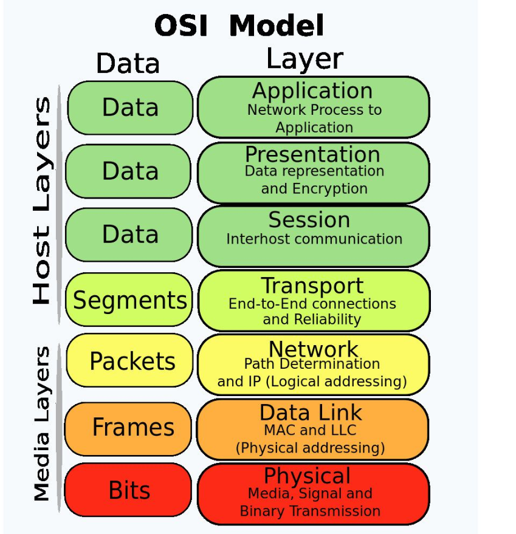

that characterises and standardises the communication functions of a telecommunication or computing system without regard to its underlying internal structure and technology.

"
Please Do Not Throw Sausage Pizza Away
"
Data is in different forms at different layers which is known as PDU - Protocol Data Unit Application Layer: This layer deals with networking application Ex: WebBrowser, Email
PDU: User Data Presentation Layer: This layer is responsible for presenting the data in the required format which may include Encryption & Decryption Ex: Video,audio
PDU: Formatted Data Session Layer: This layer establishes,Manages and terminates the session between two hosts Ex: Client software(used for logging in)
PDU: Formatted Data Transport Layer: This layer breaks up the data from the sending host and then reassembles it in the receiver.It's also used to insure reliable data transport across the network PDU: Segments
Three important steps:
Step 1: Segmentation
Step 2: Assign Sequence Number
Step 3: Assign Port number according to TCP or UDP connection
Network Layer: This layer makes "best path Determination" (Routing) decision based on lodical Address (IP Address) PDU: Packets
Data Link Layer: This layer provides reliable transit of data across a physical link. Makes decision based on physical addresses(MAC Address) PDU: Frames
Note: Here Destination mac is of next device in path and not mac of destination Physical Layer: This layer converts the whole data into binary format. And physical devices like Ethernet, Optical fibre Cable works here PDU: Binary Format


 Note: Here Destination mac is of next device in path and not mac of destination
Note: Here Destination mac is of next device in path and not mac of destination